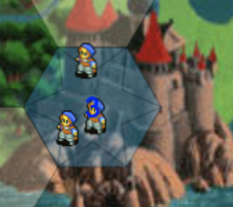

Directions
Welcome to Chance Quest, a game of conquest and chance - see what I did there? You play as a commander in service of a king. The king is ambitious and greedy so he is trying to conquer a neighboring kingdom, which is of course headed by an equally ambitious and greedy king. In fact, they are bothers! DUN DUN DUN. Yes, I have been watching a lot of Game of Thrones lately. Moving on.
Directions
Each player will start the game with one territory which is also the base. Bases are marked with a star. Players are marked by the colors red and blue. You win when you take over the enemy's base.


Directions
In order to move your units, click a territory you control that contains more than one unit. The territory will become highlighted. Then, click the territory that you want to move to.
- The territories adjacent(touching) the territory you control.(normal travel)
- The territories adjacent to friendly territories that are directly connected to the selected territory.(fast travel)
Directions
Once you have selected a valid move, all of the units from the old territory except one will move into the new territory. One of the following things will happen depending on who controls the new twerritory:
- If the territory is unoccupied (beige) you will assume control of the territory.
- If you control the territory, your units will simple move there.
- If it is controlled your rival or hostile (black) forces, you will battle.
Directions
- Attacker rolls dice equal to the number of attacking unit (max: 3) first.
- Defender rolls similarly with a max of 2 dice.
- The highest roll for each side is compared follow by the second highest if applicable.
- Each time the rolls are compared, the highest is considered the winner with a tie going to the defender.
- Loser will lose a unit for each lossed roll.
- The whole process is repeated until one side runs out of units in which case the winner is the survivor
Directions
- If either side only one unit left, there is only one check so the losing side will only lose 1 unit
- It is possible for both sides to lose a unit if for example the attacker wins the highest roll but loses the second hightest roll.
- Defenders of a base (star) gain a huge advantage because they will roll 2 addtional dice and select the rolls from the highest.
Directions
- At the end of your turn, you will automatically recruit one unit for your base and more based of the prestige of your kingdom.
- Prestige is equal to the total number of territories you control divide by 3 (rounded down) added to the number of forts (circles) you control.
- Forts themselves will recruit a single unit.